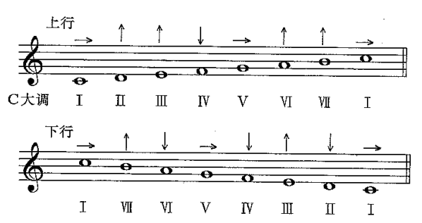

决定了音乐的归属感，我们把他作为音阶的起始音。你可以试试在钢琴上弹出CDEFGAB，而不收尾到高音C，我猜你一定会很难受。回到主音总有回家的感觉，用于终止解决。
你可能会想，如果每次都像这样在半音阶上边找边写，写出来会不会杂乱无章且费劲？它是否有内在的规律？我们之前已经接触了C大调音阶，你会发现其对应一个八度中的白键，且本身具有很强的音乐属性，其实这并不是巧合。十二平均律让音阶有了更多的样式和可能性。
所以我们有了更多的调式。调式是音乐组织音高的方式，它不只是“从哪个音开始的音阶”，还会通过音与音之间的关系，建立一段音乐的重心、方向和情绪。
下方的音轨中已经填入了你之前看到的音阶，在C大调中你已经了解了它的音高排列和音程关系。现在你可以切换下方的按钮组合，听听其他调的音阶有着什么不同的听感，其中key对应音阶的主音，而mode对应同一主音下的不同调式。
选择主音和调式后，音轨会显示该调式中的音阶。点亮更多的音符，可以同时试听它们的和声叠加。
先建立四个观察角度
音与音之间的全音、半音关系，决定调式的基本性格。正如我们之前已经知道了C大调音阶的结构关系是全全半全全全半。
感受音阶中每一个音的导向性，这可以帮助你理解调式中和弦进行的规则。
在音阶中具有特殊作用的音，通常用来强调调式的独特性格，利用特征音的变化可以探究出更多变形调式。

这些一般是建立在自然大小调的基础上的，所以我们要先掌握它们。接下来的章节会先从自然大调与自然小调开始，再认识其他常用调式，最后把调式应用到和弦连接、色彩转换与拼接中。